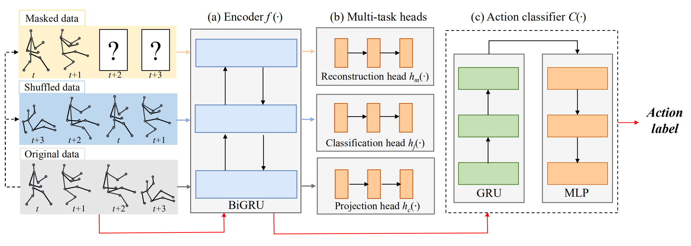

MS2L: Multi-Task Self-Supervised Learning for Skeleton Based Action Recognition
Abstract
In this paper, we address self-supervised representation learning from human skeletons for action recognition. Previous methods, which usually learn feature presentations from a single reconstruction task, may come across the overfitting problem, and the features are not generalizable for action recognition. Instead, we propose to integrate multiple tasks to learn more general representations in a self-supervised manner. To realize this goal, we integrate motion prediction, jigsaw puzzle recognition, and contrastive learning to learn skeleton features from different aspects. Skeleton dynamics can be modeled through motion prediction by predicting the future sequence. And temporal patterns, which are critical for action recognition, are learned through solving jigsaw puzzles. We further regularize the feature space by contrastive learning. Besides, we explore different training strategies to utilize the knowledge from self-supervised tasks for action recognition. We evaluate our multi-task self-supervised learning approach with action classifiers trained under different configurations, including unsupervised, semi-supervised and fully-supervised settings. Our experiments on the NW-UCLA, NTU RGB+D, and PKUMMD datasets show remarkable performance for action recognition, demonstrating the superiority of our method in learning more discriminative and general features.
Framework
Fig.2 The structure of our network. (a) Encoder. (b) Multi-task heads. (c) Classifier for action recognition. We use yellow, blue and grey arrows to indicate the pipeline for motion prediction, jigsaw puzzle recognition and contrastive learning, respectively. Action recognition is achieved with the red pipeline.
Results
Citation
@inproceedings{MS2L, author={Lilang Lin and Sijie Song and Wenhan Yang and Jiaying Liu}, booktitle={ACM Multimedia}, title={MS^2L: Multi-Task Self-Supervised Learning for Skeleton Based Action Recognition}, year={2020}, }
Reference
[1]. T. Chen, S. Kornblith, M. Norouzi, and G. Hinton. A simple framework for contrastive learning of visual representations. ICML 2020.
[2]. C. Doersch, A. Gupta, and A. A Efros. Unsupervised visual representation learning by context prediction. ICCV 2015.
[3]. Y. Du, Y. Fu, and L. Wang. Representation learning of temporal dynamics for skeleton-based action recognition. TIP 2016.
[4]. Y. Du, W. Wang, and L. Wang. Hierarchical Recurrent Neural Network for Skeleton Based Action Recognition. CVPR 2015.